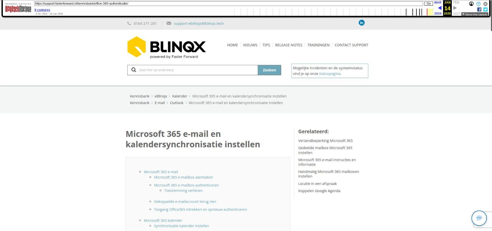

Klanten verifiëren en controleren met zkr.

Tekstinhoud
Klanten verifiëren en controleren met zkr. | Support
---
Klanten verifiëren en controleren met zkr.
Voor levensverzekeringen ben je volgens de WWFT verplicht om klanten te identificeren en te verifiëren. Dit doe je eenvoudig met een identificatie, verificatie en pep- en sanctiecheck via zkr. (voorheen DebiteurenZeker).
De verantwoordelijkheid voor het uitvoeren van het klantonderzoek ligt bij jouw organisatie. Ook zonder identificatie, verificatie en/of controles kun je in eBlinqx een levensverzekering aanmaken.
Als organisatie beslis je na de controles zelf wat je met de ontvangen informatie doet. Als een persoon bijvoorbeeld negatief in de media staat, controleer je deze info en bepaal je zelf of je deze persoon als klant wilt.
Inrichten
Type controles
Controles opstarten
Voor een bestaand dossier
Via workflow
Handmatig opstarten vanuit de tabel Klantonderzoek
1. identificatie opstarten
2. Klant e-mailen om zich te identificeren
Bij aanmaken nieuw dossier
Identificatie/verificatie
1. Identificatie opstarten
2. Klant e-mailen om zich te identificeren
PEP- en sanctiecheck
Aard en doel en verklaring inbreng eigen vermogen
Aanpassen en verwijderen
Meerdere klanten in één keer uitnodigen
1. Filter selectie
2. Nodig klant uit voor identificatie
Resultaten bekijken en controleren
Foutmelding en verzoek opnieuw in wachtrij zetten
Resultaten ophalen met tags
Credits
Inrichten
Als je de software van zkr. nog niet gebruikt, neem dan contact op met zkr. via marketing@zkr.nl of 070 – 262 00 70.
Gebruik je de software van zkr. al? Stuur dan een e-mail naar support@zkr.nl en we nemen contact op om de koppeling in te richten. Hieraan zijn kosten verbonden, afhankelijk van de inrichting op maat.
Type controles
TYPE UITLEG
iDIN Controle van bankgegevens via IDIN en noodzakelijk volgens WWFT. iDIN is een dienst van de banken waarmee particulieren of een UBO (uiteindelijk belang hebbende), zich bij andere organisaties met de veilige en vertrouwde inlogmiddelen van hun eigen bank kunnen identificeren.
Identificatie Klant maakt foto van voor- en achterkant van paspoort, identiteitskaart of rijbewijs. Automatische controle op echtheid, MRZ, geldigheid en gestolen/vermist status. Volledig digitaal en AVG/GPDR-compliant. Dekt alle west Europese landen.
Identificatie plus Bovenstaande identificatie, inclusief verificatie door een persoon die ook nog een handmatige controle uitvoert. Hierdoor is er een wereldwijde dekking.
Identificatie met selfie Identificatie, inclusief gezichtsverificatie en controle of een levend persoon de selfie maakt. De biometrie van de selfie word vergeleken met de biometrie van de foto op het document, waardoor de persoon ook wordt geverifieerd. Dekt alle west Europese landen.
Identificatie met selfie plus Bovenstaande identificatie, inclusief verificatie door een persoon die ook nog een handmatige controle uitvoert. Hierdoor wereldwijde dekking.
PEP- en sanctie controle (inclusief negatieve media) Uitgebreide controle in meer dan 2.500 internationale bronnen die gecontroleerd moeten worden volgens WWFT. Onder andere lijsten met politiek prominent personen (PEP), sanctielijsten, centraal insolventie registers, uitgesloten bestuurders en gezochte criminelen door interpol. Daarnaast ook controle van nieuwssites of de persoon negatief in de media staat.
Verklaring inbreng eigen vermogen Deze vul je zelf in als de inbreng van een grote som eigen geld verdacht is.
Vanuit de Wwft is het verplicht om te registeren hoe iemand aan het geld komt voor de oprichting/aankoop van zijn of haar bedrijf/huis. Hierbij dient een financiering los van het eigen geld genoteerd te worden. Daarnaast dient er doorgevraagd te worden over het eigen geld hoe de opbouw hiervan is. Denk bijvoorbeeld aan een combinatie van een gift, spaargeld en winst uit onderneming.
Doel en aard van relatie Deze controle wordt niet door zkr. uitgevoerd.
Hier geef je automatisch invullen aan als je een product, bijvoorbeeld een hypotheek, een rechterdeel én een bronvermelding hebt in een klantdossier. Daarnaast kun je deze handmatig invullen of aanpassen.
Controles opstarten
Het opstarten van de controle identificatie en PEP- en sanctiecheck kan op drie manieren, namelijk vanuit de workflow of handmatig vanuit een klantdossier of via SMART. Hieronder lees je meer je over deze mogelijkheden. Hierbij zit ook een verschil tussen het opstarten van de controles bij een bestaande klant en bij een nieuwe klant.
Voor een bestaand dossier
Via workflow
Het is mogelijk om de verificatie en PEP- en sanctiecheck vanuit een workflow op te laten starten. Bij de inrichting van zkr. hoort een standaard workflow die naar wens op maat gemaakt kan worden. De workflow wordt automatisch opgestart wanneer je een nieuwe dienst aanmaakt. Indien er al een dienst aanwezig is en de workflow staat er niet onder dan kan je deze onder de dienst handmatig toevoegen via het tabblad Workflow en het plusicoon (indien je hier de rechten toe hebt). Heb je deze mogelijkheid niet dan kan je handmatig het verzoek opstarten van het klantonderzoektabel (zie hieronder).
In de workflow kan je de keuze maken om een identificatie/verificatieverzoek te versturen. Je maakt de keuze welke indentificatiecheck je wilt uitvoeren en vervolgens wordt er een concept e-mail klaargezet met daarin de link. Deze conceptmail verstuur je naar de klant.
Of je maakt de keuze om een PEP en sanctielijstcheck uit te voeren. Er wordt dan automatisch een verzoek verstuurd naar zkr.
Handmatig opstarten vanuit de tabel Klantonderzoek
1. identificatie opstarten
Voor identificatie ga je naar de klantonderzoektabel onder een persoon. Dit via het tabblad Partijen & Objecten – klikken op de betreffende persoon. Hier voeg je handmatig een nieuwe controle toe door op het plusicoon te klikken.
Je krijgt dan een pop-up te zien, waarin je een keuze kan maken welke controle je wilt uitvoeren.
2. Klant e-mailen om zich te identificeren
Je gaat hierna de klant uitnodigen om zich te identificeren. Hiervoor stuur je een e-mail naar de klant. In deze e-mail voeg je de standaardtekst 'Persoonscheck – klant – Verzoek tot indentificatie (zkr)' toe. In deze standaardtekst staat een tag. Deze tag wordt een unieke URL. De klant klikt hierop en start de identificatie.
Bij aanmaken nieuw dossier
Identificatie/verificatie
1. Identificatie opstarten
Wanneer je een dossier aanmaakt en een persoon opvoert, kan je gelijk de identificatie opstarten.
Vul de gegevens van de personen in
Vink 'Identificatie/verificatie via zkr' aan. Er worden nu meer invulvelden gekleurd, deze zijn namelijk verplicht voor de werking van zkr.
Kies het 'Soort identificatie' die je wilt uitvoeren.
Sla op als je alles hebt ingevuld.
Het dossier wordt nu aangemaakt en er wordt een melding naar naar zkr. gestuurd. Zkr. gaat de klantgegevens nu controleren. Dit kan 1 uur duren.
Tijdens de controle zie je aan de 'In behandeling' melding in de klantonderzoektabel dat het klantonderzoek in behandeling is.
2. Klant e-mailen om zich te identificeren
Je gaat hierna de klant uitnodigen om zich te identificeren. Hiervoor stuur je een e-mail naar de klant. In deze e-mail voeg je de standaardtekst 'Persoonscheck – klant – Verzoek tot identificatie (zkr)' toe. In deze standaardtekst staat een tag. Deze tag wordt een unieke URL. De klant klikt hierop en start de identificatie.
PEP- en sanctiecheck
De identificatie/verificatie en PEP- en sanctiecheck kan je handmatig of via zkr. laten verlopen. Voor de PEP- en sanctiecheck ga je naar de workflow (zie hierboven) of naar de klantonderzoektabel onder een persoon. Dit via het tabblad Partijen & Objecten – klikken op de betreffende persoon. Hier voeg je handmatig een nieuwe controle toe door op het plusicoon te klikken. Wanneer je de check via zkr. laat verlopen dan wordt er direct de call naar zkr. uitgevoerd. Het resultaat wordt in het klantonderzoektabel opgeslagen. Wanneer het resultaat 'Bevinding' of 'Fout' is dan kan je inloggen in zkr. om te bekijken wat deze bevinding of fout is.
Aard en doel en verklaring inbreng eigen vermogen
Aard en doel van de relatie en verklaring inbreng eigen vermogen kan je alleen handmatig opvoeren. Dit loopt niet via zkr. De aard en doel van de relatie kan op 2 manieren gevuld worden, namelijk:
In het dossier is een dienst aanwezig, waarbij de bronvermelding is gevuld (deze moet ongelijk zijn aan onbekend) en een rechterdeel is aangemaakt.
In de pop-up het vrije tekstveld vullen. Is deze gevuld dan krijgt de controle een groene vink. Is deze leeg dan komt er een rood kruis te staan.
Aanpassen en verwijderen
Het aanpassen en verwijderen van de controleresultaten is alleen mogelijk bij de controles die handmatig zijn uitgevoerd en de bron niet zkr. is.
Meerdere klanten in één keer uitnodigen
Wil je in één keer een grote groep klanten controleren?
In SMART kun je een selectie ophalen, zodat je in één keer al je klanten kan uitnodigen om zich te identificeren. Dit is bijvoorbeeld handig als je een portefeuille hebt overgekocht. Dit is de selectie WWFT Klantencontrole.
LET OP: als je met de SMART selectie gaat werken, wordt de verificatie of andere controles alleen correct uitgevoerd als de benodigde klantgegevens volledig zijn ingevuld.
Daarnaast kan het even duren voordat je in eBlinqx het resultaat van de controle ziet. Het kan 1 uur duren voordat zkr. alle controles heeft uitgevoerd.
1. Filter selectie
Klik in SMART de selectie WWFT Klantencontrole aan. In deze selectie kan je filteren. Gebruik hiervoor eerst de filters aan de linkerkant van het scherm. Als je nog specifieker wilt filteren, gebruik dan de filtervelden.
Onder het informatie-icoon kan je vinden hoe je in deze velden kunt filteren:
LET OP: e-mailadres moet gevuld zijn om te kunnen uitnodigen (controleer dit via de filterveld in kolom E-mailadres)
Selecteer bijvoorbeeld klanten waarbij de klom 'Identificatie' nog leeg is, omdat deze zich nog niet hebben geïdentificeerd. Daarnaast kun je bijvoorbeeld filteren op Dossierstatus: Klant, aan de linkerkant.
2. Nodig klant uit voor identificatie
Nadat je de personen geselecteerd hebt met de blauwe vinkjes, voer je een controle uit met één van de blauwe knoppen bovenaan. Klik op 'Identiteit check' of 'PEP- en sanctie check' om klanten uit te nodigen.
Als je op 'Identiteit check' klikt, opent er een pop-up waarmee je de klant met een e-mail uitnodigt om zich te identificeren. Voeg hier de tag [selectie->identificatielink] toe, zodat de klant een URL ziet in de e-mail waarmee hij/zij de identificatie opstart.
Resultaten bekijken en controleren
Zodra je de identificatie, verificatie en/of andere controles hebt uitgevoerd, zie je de resultaten op de startpagina van het klantdossier in de tabel Klantonderzoek.
Als je op de persoon klikt, ga je naar de tabel Klantonderzoek onder de persoon. Hier kan je de resultaten, bron en status voor die persoon bekijken.
In eBlinqx kan je niet terugzien waarom een resultaat fout is. Om dit te achterhalen moet je inloggen in zkr. Hier kan je meer informatie vinden over het resultaat en waarom deze fout is.
Foutmelding en verzoek opnieuw in wachtrij zetten
Indien het verwerken van het verzoek niet goed is gegaan dan komt er in het dossier een melding te staan dat het klantonderzoek niet goed is gegaan en je wordt doorwezen naar de tabel klantonderzoek.
In deze tabel verschijnt er onder de kolom Status de status 'Foutmelding'. Als je hier met je muis op gaat staan, zie je wat de foutmelding is.
Je kunt het verzoek nogmaals bij Zkr. indienen via de ronde pijltjes achter het verzoek. De foutmelding wordt dan gewist en het verzoek opnieuw in de wachtrij gezet.
Resultaten ophalen met tags
Gebruik tags om resultaten op te halen van uitgevoerde controles. Zie een voorbeeld hier rechts.
[dossier->eerste persoon->klantonderzoek->identificatie verificatie->resultaat] (Goed/Fout/Bevinding/In behandeling/)
Credits
Om verzoeken bij Zkr. in te dienen neem je credits af bij Zkr. Werkt de link in de e-mail niet dan kan het zijn dat jouw credits op zijn of zijn verlopen. Hiervan wordt dan ook een beheerdersmelding getoond, zodat de beheerder van jouw omgeving hierop wordt geattendeerd. Heb je hier vragen over neem dan contact op met Zkr.
Vastlegging acties in dossierhistorie
De uitgevoerde checks worden ook vastgelegd in de dossierhistorie.
Laatste update: 21 november 2025
Was deze informatie nuttig?
Ja Nee